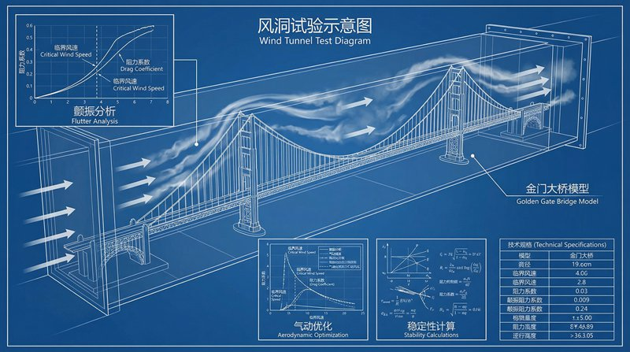
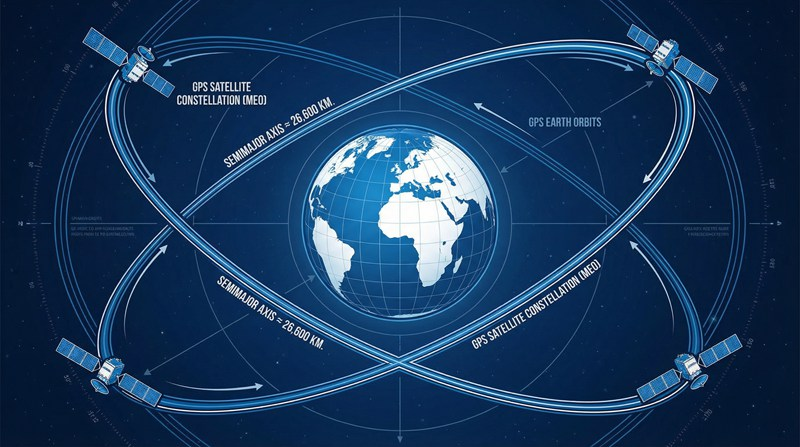
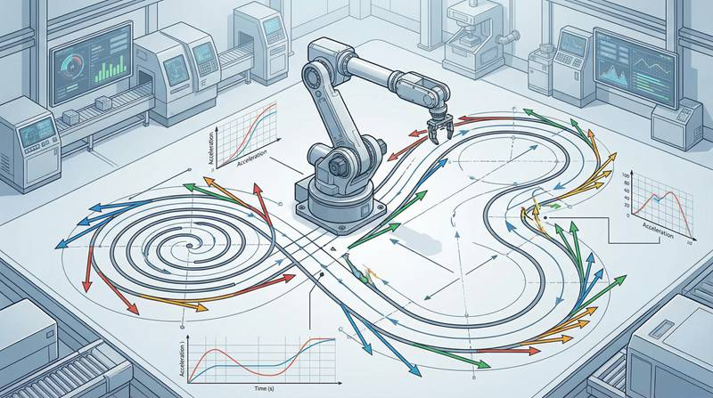

返回课程列表
第三课
运动学
卫星轨道与自动驾驶的运动学
⏱️ 约50分钟
GPS卫星在20200km高空精确运行，自动驾驶汽车在复杂路况中安全行驶——这些都需要精确的运动学计算。

卫星轨道运动学
卫星绕地球运行遵循开普勒定律。轨道高度决定周期，低轨卫星约90分钟绕地球一圈，地球同步轨道卫星周期恰好24小时。

卫星轨道的运动学参数
不同轨道的运动学特征：
- 低地球轨道（LEO）：高度200-2000km，速度约7.8km/s，SpaceX星链在此
- 中地球轨道（MEO）：高度2000-36000km，GPS卫星在20200km
- 地球同步轨道（GEO）：高度35786km，通信卫星固定在赤道上空
- 月球轨道：距地球38万km，阿波罗飞船往返约8天
自动驾驶的运动规划
自动驾驶需要实时计算车辆的位置、速度和加速度，规划安全的行驶轨迹。这本质上是一个复杂的运动学问题。

自动驾驶的运动学
自动驾驶中的运动学应用：
- 轨迹规划：计算从A到B的最优路径，考虑曲率、速度限制
- 运动预测：预测周围车辆和行人的未来位置，提前避让
- 制动距离：120km/h紧急制动距离约80米，系统需要提前判断
- 转弯半径：根据速度和路面摩擦力计算安全转弯速度